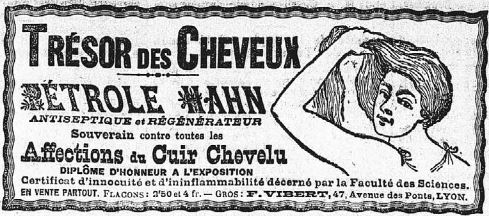

Le Salut Public, 14 novembre 1901 (54e année, n°318, p1)
Trésor des cheveux
https://www.lectura.plus/Presse/show/?id=69SALUTPUBLI-19011114-P-004.pdf&query=&back=%2FPresse%2Fsearch%2F%3Fquery%3D%2522squelette%2Bretrouv%25C3%25A9%2522%26fromDate%3D%26untilDate%3D
